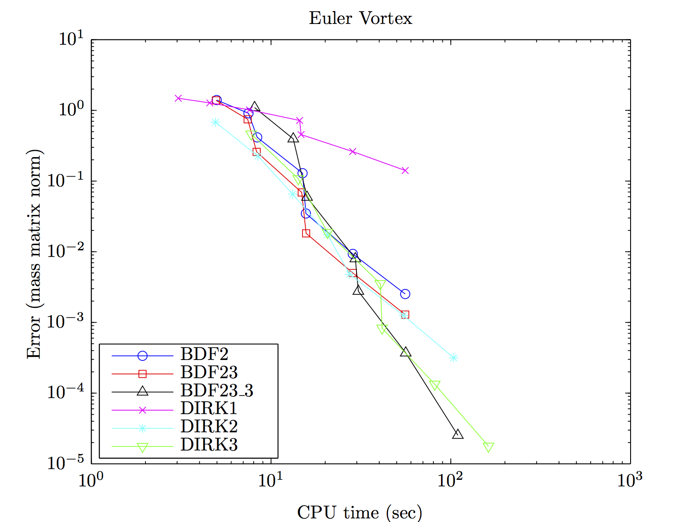
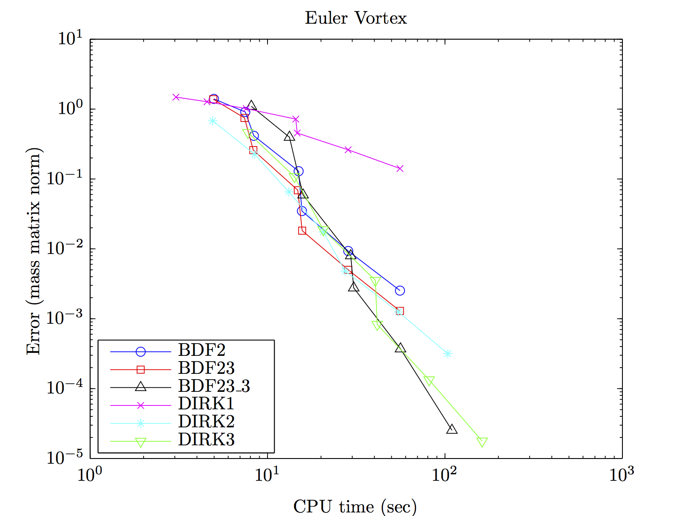

Research overview


Performance tuning for discontinuous Galerkin methods
Investigation into numerical solvers and time integrators for systems of Ordinary Differential Equations (ODEs) arising from the Discontinuous Galerkin Finite Element Method (DG-FEM) semi-discretization of the Navier-Stokes equations to explore potential speedup opportunities. The effects of varying several parameters, including the ODE solver, predictors for Newton’s method, GMRES tolerance, and Jacobian recycling are considered. Careful selection of these parameters results in speedup factors of between 5 and 14 over standard, non-optimal choices on two model flow problems.
 

Mesh (left) and solution (center) of Euler vortex used to study performance of DG solvers. Results for one particular parameter configuration (time step, GMRES tolerance, etc) shown in right figure.
Mesh (left) and solution (center) of viscous flow over NACA airfoil used to study performance of DG solvers. Results for one particular parameter configuration (time step, GMRES tolerance, etc) shown in right figure.
Conference papers
-
M. J. Zahr and P.-O. Persson, “Performance tuning of Newton-GMRES methods for discontinuous Galerkin discretizations of the Navier-Stokes equations,” in 21st AIAA Computational Fluid Dynamics Conference, (San Diego, California), American Institute of Aeronautics and Astronautics, AIAA Paper 2013-2685, 6/24/2013 -- 6/27/2013. [ bib | paper | link ]
Talks
-
M. J. Zahr and P.-O. Persson, “Performance tuning of Newton-GMRES methods for discontinuous Galerkin discretizations of the Navier-Stokes equations,” in 43rd AIAA Fluid Dynamics Conference and Exhibit, (San Diego, California), 6/24/2013 -- 6/27/2013. [ bib | slides | link ]
MORTestbed: Model Order Reduction Testbed
MATLAB-based testbed developed for the comparison of model reduction techniques on linear and nonlinear, static and dynamic systems.
Comparison of model reduction techniques on test problems: inviscid Burgers' equation (left), FitzHugh-Nagumo equations (center), and a nonlinear transmission line model (right).
Technical reports
-
M. J. Zahr, K. Carlberg, D. Amsallem, and C. Farhat, “Comparison of model reduction techniques on high-fidelity linear and nonlinear electrical, mechanical, and biological systems,” tech. rep., University of California, Berkeley, 2010. [ bib | paper ]
Posters
-
M. J. Zahr, C. Farhat, K. Carlberg, and D. Amsallem, “Comparison of model reduction techniques on linear and nonlinear electrical, mechanical, and biological systems,” in UC Berkeley Undergraduate Research Poster Session, (Berkeley, California), 4/19/2011. [ bib | poster ]
-
M. J. Zahr, C. Farhat, K. Carlberg, and D. Amsallem, “Comparison of model reduction techniques on linear and nonlinear electrical, mechanical, and biological systems,” in 2011 SIAM Conference on Computational Science and Engineering (CSE11), (Reno, Nevada), 3/1/2011. [ bib | poster ]
Micro-columns as rate gyroscope motion sensors
Introduced a model for the use of an ensemble of microcolumns as angular motion sensors. The methodology for angular detection is most suitable for small, high-frequency systems. This project makes use of the Equipartition Theorem and the Louisville Equation to determine the evolution of the probability density distribution of the location of the microcolumn tips. The work formulates the problem of interest, establishes a theoretical and computational model, presents the numerical stability analysis, and the simulation results.
Technical reports
-
M. J. Zahr and S. Govindjee, “Theoretical and numerical foundations for the use of microcolumns as angular motion sensors,” tech. rep., University of California, Berkeley, 2011. [ bib | paper ]
Seismic risk maps
Implemented improvements to the seismic risk mapping tool on the USGS website. New version of the risk mapping tool enables users to: incorporate the effects of soil class on seismic risk, determine the seismic risk of a specific inventory of buildings as opposed to merely a generic region, and quantify risk as either the expected annual monetary loss or probability of a given level of damage. Study of impact in the context of non-ductile concrete buildings performed.
Technical reports
-
M. J. Zahr, N. Luco, and H. Ryu, “Mitigation of seismic risk pertaining to non-ductile reinforced concrete buildings using seismic risk maps,” tech. rep., United States Geologic Survey (USGS), 2009. [ bib | paper ]
Talks
-
M. J. Zahr, N. Luco, and H. Ryu, “Mitigation of seismic risk pertaining to non-ductile concrete buildings using seismic risk maps,” in Seminar at USGS headquarters (Host: Nicolas Luco), (Golden, Colorado), 6/8/2010. [ bib | slides ]
-
M. J. Zahr, N. Luco, and H. Ryu, “Mitigation of seismic risk pertaining to non-ductile concrete buildings using seismic risk maps,” in Undergraduate Research Seminar at UC Berkeley, (Berkeley, California), 4/27/2010. [ bib | slides ]
-
M. J. Zahr, N. Luco, and H. Ryu, “Mitigation of seismic risk pertaining to non-ductile concrete buildings using seismic risk maps,” in PEER Internship Summer Meeting, (webcast), 8/18/2009. [ bib | slides ]
-
M. J. Zahr, N. Luco, and H. Ryu, “Mitigation of seismic risk pertaining to non-ductile concrete buildings using seismic risk maps,” in Seminar at USGS headquarters (Host: Nicolas Luco), (Golden, Colorado), 8/13/2009. [ bib | slides ]
Posters
-
M. J. Zahr, N. Luco, and H. Ryu, “Mitigation of seismic risk pertaining to non-ductile concrete buildings using seismic risk maps,” in 2009 PEER Annual Meeting, (San Francisco, California), 10/15/2009 -- 10/16/2009. [ bib | poster ]
-
M. J. Zahr, N. Luco, and H. Ryu, “Mitigation of seismic risk pertaining to non-ductile concrete buildings using seismic risk maps,” in 2009 Young Researcher's Symposium, (Buffalo, New York), 8/20/2009 -- 8/22/2009. [ bib | poster ]